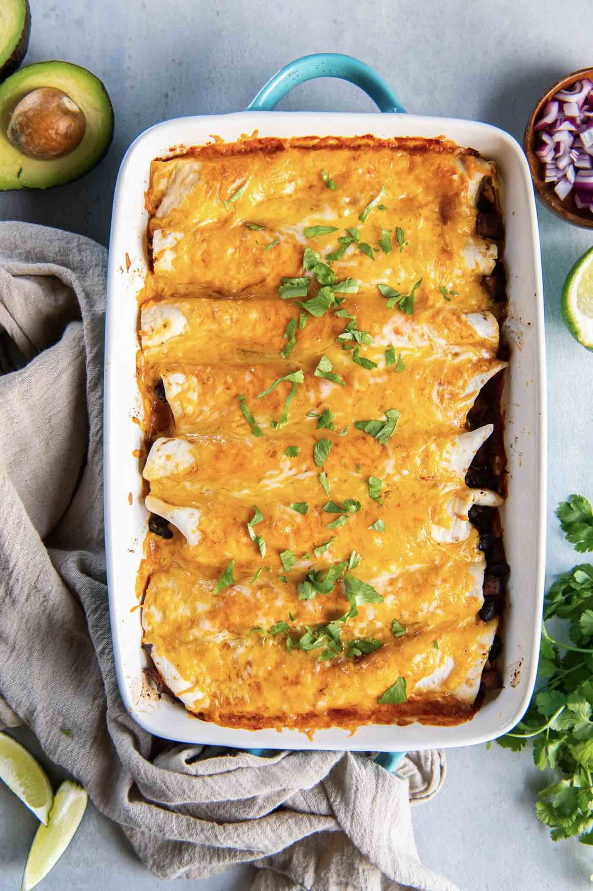

Sweet Potato Black Bean Enchiladas

- Meal
- Dinner
- Serves
- 6
- Protein
- legume (black beans) — vegetarian
- Cook
- oven · 40 min active / 65 min total · easy
- Make-ahead / leftovers
- yes (assemble a day ahead or freeze unbaked) / yes
- Mediterranean
- yes
- WW tier
- moderate
- Status
- Trying out (probation)
Kristine's Kitchen vegetarian enchiladas: tender sweet potato, red onion, and black beans with chili powder and cumin, rolled with cheese in tortillas and baked under red enchilada sauce. Sweet-savory filling the kids eat without noticing there's no meat.
Ingredients
- 1 1/2 Tbsp olive oil
- 1 red onion, chopped
- 4 1/2 cups peeled sweet potato, 1/2-inch cubes (~3 medium)
- 3/4 cup water
- 4 garlic cloves, minced
- 1 1/2 Tbsp chili powder
- 1 Tbsp ground cumin
- 1/3 tsp salt + 1/3 tsp pepper
- 2 cans (15 oz) black beans, rinsed and drained
- 2 1/4 cups red enchilada sauce (two 10 oz cans, or one 19 oz can + a splash)
- 3 cups shredded Mexican-blend or cheddar cheese, divided
- 15 (8-inch) whole-wheat flour tortillas
- To serve: plain Greek yogurt or sour cream, avocado, cilantro
Method
- Heat the oven to 375°F.
- Heat the oil in a large skillet over medium. Add onion and sweet potato; sauté 5 minutes until starting to brown. Add the water, cover, and cook 5–10 minutes until the sweet potato is tender but not mushy.
- Uncover; stir in garlic, chili powder, cumin, salt, and pepper for 30 seconds. Off heat, stir in the black beans.
- Spread 1/2 cup sauce in a 9x13 dish and a little in an 8x8 dish.
- Fill each tortilla with ~1/2 cup filling and 2 Tbsp cheese, roll tightly, and lay seam-side down (about 10 in the 9x13, 5 in the 8x8).
- Pour the remaining sauce over and top with the remaining cheese.
- Cover with foil and bake 15 minutes; uncover and bake ~10 minutes more until bubbly. Serve with toppings.
Notes
- Scaled ×1.5 from Kristine's 10 enchiladas / 9x13; beans rounded from 1 1/2 cans to 2 for protein. The 8x8 pan can be frozen unbaked for a future night (bake from thawed, covered, ~30 min).
- Whole-wheat tortillas (Kristine lists whole wheat or white) — Sam's and Aldi both carry them.
- Mild red enchilada sauce for the kids.
- Not Skillet Chicken Tortilla Casserole or Black Bean Tacos — meatless, sweet potato, rolled and baked.
- Mediterranean ✓ (olive oil, legumes, vegetables, whole-wheat tortillas — 4 of 4, cheese notwithstanding). moderate for 3 cups of cheese; use 2 cups to lighten.